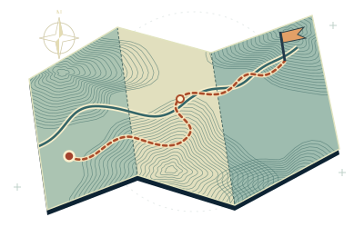

TRUNG TÂM HỌC TẬP YYSD
Bàn học của bạn.
Bắt đầu một bài ngắn, ôn lại điều đã học và ghi dấu tiến bộ mỗi ngày.
Trình duyệt không cho lưu tiến độ. Bạn vẫn có thể học trong phiên này.
BÀI HỌC ĐỀ XUẤT
CHẶNG 01 / 08 · READING
Đọc để nắm ý chính
Tìm ý bao quát và phân biệt chi tiết hỗ trợ.
3 phút

NHẬT KÝ CÁ NHÂN
Nhịp học của bạn
0ngày liên tiếp
0XP tích lũy
LỘ TRÌNH CÁ NHÂN
01 / 02Các chặng kỹ năng
0 / 8 chặngĐi theo thứ tự gợi ý hoặc chọn kỹ năng bạn muốn rèn.
NHẬT KÝ ĐỀ THI
Kết quả gần đây
Chưa có bài đã nộp. Hãy mở một đề trong thư viện; kết quả sẽ được lưu trên thiết bị này.